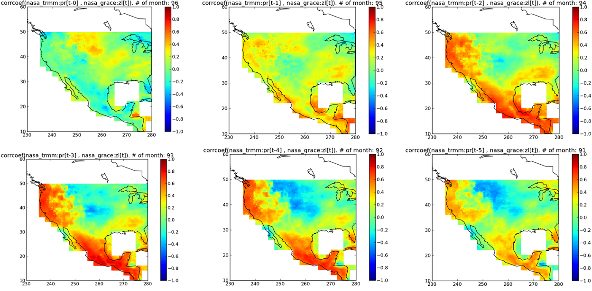

Science Use Cases Example 7: Correlation Maps of TRMM Precipitation and GRACE Water Land Storage
Services Used: Time-lagged Correlation Map
Datasets used: TRMM Precipitation and Grace Equivalent Water Height Over Land
Scientific Merit: Along the West Coast, there is little correlation at zero lag between precipitation and ground water storage, but positive correlation over portions of the northern Rockies and Great Plains. Over the West Coast, as the lag between precipitation (leading) increases, the correlation with equivalent water height increases, maximizing when precipitation leads by about three months. This is also the case across Mexico and portions of Central America. There’s also a weaker albeit positive correlation of groundwater storage following precipitation over portions of the Southeast U.S., maximizing when precipitation leads by two months.
